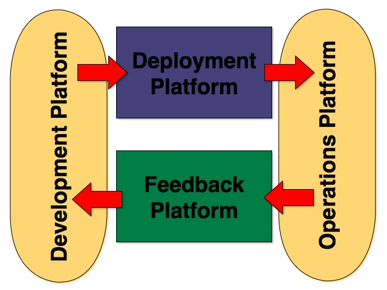

Infrastructure Engineering
The first 100 days ... and beyond
Created by roland@tritsch.org / @innolocity
About ... the Roland
- 50% Software Engineer
- 50% Manager/Builder of organisations
- 50% Seller/Implementer of ideas
- Ex-Cyclist, Ex-IONA, Ex-Gilt
- Papa and Hubby :)
About ... the Roland

About ... Nitro
- Good/interesting business model (with potential)
- Good/interesting people
- Good/interesting technology
- Good/interesting problem(s)
- Good/interesting culture
- Products work!!!
About ... Nitro
- It's all about the future - I would not join for Nitro Pro
- More/better use/value cases - How to monetize Nitro Cloud (Platinum)
- Managing growing pains - Make people stay for more than 3 years
- Amount of technical debt - Introduce funerals
About ... the role
- Inspire, lead and grow the global Infrastructure Team
- Develop and drive the vision for the Infrastructure Platform
- Own the software development experience from code to value
About ... Infrastructure Engineering
- Buzzing with Innovation!!!
- The challenge is ... to turn that innovation into tangible value!
- And ... to expect the rate of change to increase!!
About ... Infrastructure Engineering
About ... my beliefs
- I am the VP of Happiness (for development (ease of deployment) and production (uptime))
- The Power of Why (and the dots in between)
- Innovation and Diversity
About ... the first 100 days
- Find a customer :) ...
- Implement a strawman ...
- Forming the team ...
About ... how success looks like
- 80% of engineering is using the deployment platform
- 80% of all deployments run through the deployment platform
- 80% of the revenue is coming from subscription based products in the cloud
- 100% uptime
- 100% retention
- 10 talks at 10 conferences
Questions?